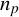
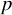
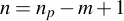
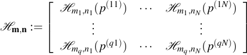
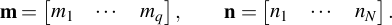
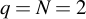

Examples
Hankel matrix
![{cal H}_{m,n}(p) := left[begin{array}{ccccc} p_1 & p_2 & p_3 & cdots & p_n p_2 & p_3 & iddots & & p_{n+1} p_3 & iddots & & & vdots vdots & & & & p_m & p_{m+1} & cdots & & p_{m+n-1} end{array}right] in mathbb{R}^{mtimes n}](eqs/4353269141702604213-150.png)
is specified in MATLAB/Octave by a structure variable with fields m (number of rows) and, optionally, n (number of columns):
s.m = m; s.n = n;
If s.n is missing, the number of columns is determined from the length  of  as .
Mosaic Hankel matrix
A mosaic Hankel matrix

is specified by the vectors

For example, with ,
s.m = [m1; m2]; s.n = [n1; n2];
Unstructured matrix
An  unstructured matrix is a special case of a mosaic Hankel matrix and is specified by
unstructured matrix is a special case of a mosaic Hankel matrix and is specified by
s.m = ones(m, 1); s.n = ones(n, 1);
Weight vector
The vector  of weights is considered part of the structure and is specified by a filed w of s:
of weights is considered part of the structure and is specified by a filed w of s:
s.w = w;
Exact elements
Exact elements of , i.e., constraints  , are specifies by infinite weights:
, are specifies by infinite weights:
s.w(I_exact) = inf;
where I_exct are the indeces of the exact elements of .
Missing elements
Missing elements of are specified by setting them to NaN:
p(I_missing) = NaN;
where I_imssing are the indeces of the missing elements of .